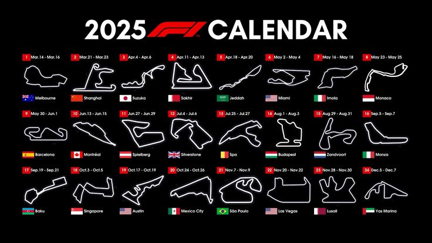

Circuitos 2025
Japón – Suzuka (4-6 de abril): Suzuka es considerado uno de los circuitos más exigentes y técnicos, con una secuencia de curvas rápidas como la "S" que requiere máxima precisión y control del coche. La famosa curva 130R desafía a los pilotos a mantener su velocidad en un giro de alta carga aerodinámica. Con un diseño que premia la destreza del conductor, Suzuka es un circuito que pone a prueba tanto la habilidad como la resistencia, y su ambiente apasionado lo convierte en una parada especial en el calendario.
Baréin – Sakhir (11-13 de abril): El Circuito Internacional de Baréin es conocido por su clima cálido y su superficie abrasiva, lo que hace que el manejo de los neumáticos sea clave para el éxito. Su trazado, con largas rectas y curvas técnicas, permite varias oportunidades de adelantamiento, pero también requiere una gran concentración debido a su naturaleza técnica. Las condiciones extremas de calor y polvo a menudo complican las estrategias.
Italia – Imola (16-18 de mayo): Imola es un circuito histórico conocido por su trazado técnico y desafiante. Con curvas como Acque Minerali y Variante Alta, exige mucha destreza de los pilotos, que deben mantener la concentración durante toda la carrera.
Mónaco – Montecarlo (23-25 de mayo): El Circuito de Mónaco es el más emblemático de la F1, con su trazado urbano estrecho y sinuoso, donde adelantar es casi imposible. La calificación es clave en Mónaco, y los pilotos deben estar absolutamente concentrados para no cometer errores, ya que las barreras están muy cerca.
España – Barcelona (30 de mayo – 1 de junio): El Circuito de Barcelona-Cataluña es conocido por su versatilidad, con una mezcla de curvas rápidas y secciones más técnicas que desafían a los pilotos a mantener un alto nivel de concentración. Las largas rectas permiten adelantamientos, pero las zonas más complejas requieren gran destreza y estrategia para no perder posiciones. Es un circuito que los equipos conocen bien y que favorece las estrategias de carrera inteligentes debido a su dificultad para pasar a otros coches.
Reino Unido – Silverstone (4-6 de julio): Silverstone es conocido como la "casa de la Fórmula 1" y es un circuito que ha formado parte del campeonato desde sus inicios. Con sus largas rectas y curvas de alta velocidad como Copse y Maggotts, los pilotos deben estar siempre alerta y ser extremadamente precisos. Las condiciones cambiantes del clima suelen ser un factor impredecible.
Bélgica – Spa-Francorchamps (25-27 de julio): Spa es uno de los circuitos más legendarios de la F1, famoso por su clima impredecible y su diseño desafiante. La famosa Eau Rouge es una de las curvas más icónicas, exigiendo a los pilotos máxima confianza en sus coches. La larga recta de Kemmel ofrece excelentes oportunidades de adelantamiento, pero el resto del circuito, con sus curvas rápidas y su complejidad técnica, pone a prueba tanto la habilidad como la resistencia de los pilotos.
Italia – Monza (5-7 de septiembre): Monza, conocido como el "Templo de la Velocidad", es el circuito más rápido del calendario, con largas rectas y pocas curvas que permiten a los coches alcanzar su máxima velocidad. Las emocionantes batallas por el liderazgo en la pista son habituales, pero la clave aquí es la velocidad pura y las estrategias de gestión de neumáticos.
Singapur – Marina Bay (3-5 de octubre): El Circuito Urbano de Singapur es uno de los más exigentes debido a su trazado estrecho y sinuoso, que deja poco espacio para los errores. Las altas temperaturas y la humedad también ponen a prueba la resistencia de los pilotos, quienes deben mantener su concentración a lo largo de toda la carrera.
México – Ciudad de México (24-26 de octubre): El Autódromo Hermanos Rodríguez es conocido por su altitud, lo que afecta la potencia de los coches y genera desafíos en cuanto a la gestión del motor. El circuito, con su mezcla de curvas rápidas y sectores lentos, permite a los pilotos atacar en la zona de adelantamientos, pero las altas temperaturas también juegan un papel importante en la estrategia.
Las Vegas – Las Vegas (3-5 de noviembre): Las Vegas es uno de los circuitos más nuevos y espectaculares, con un trazado nocturno que atraviesa la famosa Strip. Las rectas largas y las curvas rápidas ofrecen oportunidades para adelantamientos, pero también exige mucha precisión debido a su diseño técnico.
